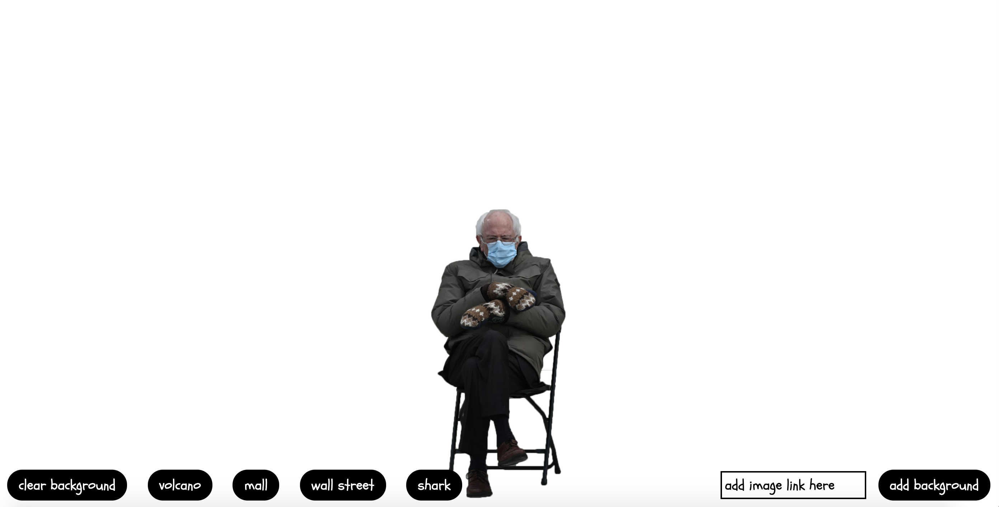
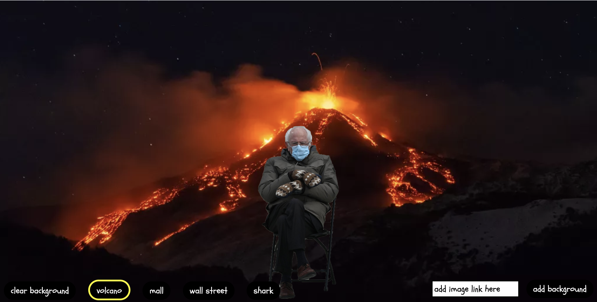

Bernie in Chair
2021
After Biden's inauguration, there was one image that stood out above the rest: Bernie Sanders sitting in a chair with his arms crossed and large mittens covering his hands.
Memes quickly covered social media, with images of Bernie in the chair and unusual backgrounds popping up quicker than daisies. Inspired by this, I made a quick site where users can put Bernie in a few pre-selected backgrounds or be bold and add their own background.
 The landing page of the site, with the canvas blank and ready for images
 Bernie on his chair in front of an erupting volcano.
 Bernie looking grumpy on the floor of Wall Street.
Bernie looking grumpy on the floor of Wall Street.
 Bernie on his chair in the middle of the desert. Mittens may not be necessary
Bernie on his chair in the middle of the desert. Mittens may not be necessary